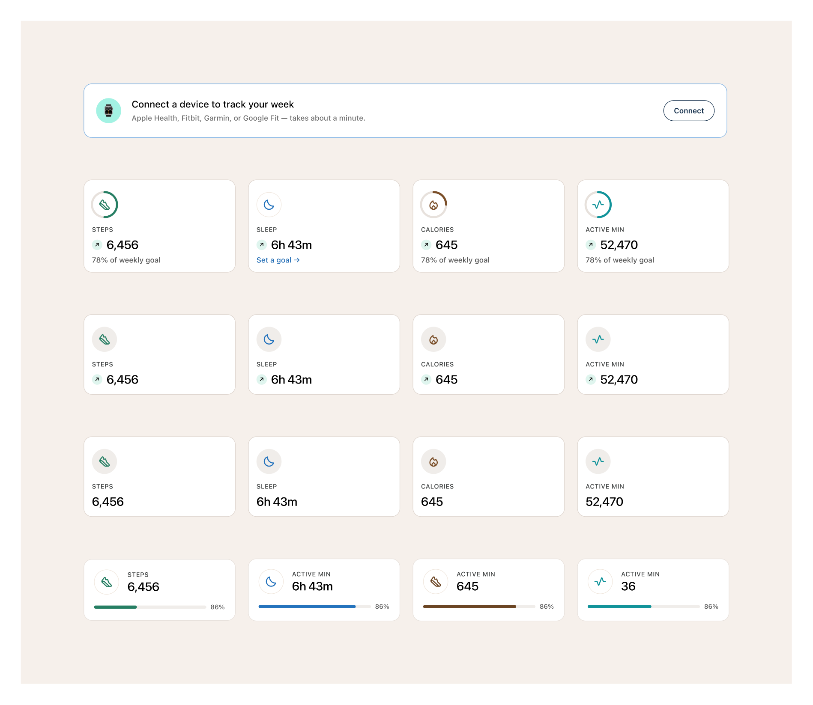

The "This week" tracker grid. Four tiles on desktop (steps, sleep, calories, active min), each with a ring-style icon, label, value, and a sub line ("78% of weekly goal" or "Set a goal →"). Variants cover the meaningful per-tile states.
View in FigmaEach tile is the same shell — ring icon at top, eyebrow label, big value with optional trend arrow, sub line. The variants cover which copy/state lives in the sub-line slot.

Set a goal →. Used when the user hasn't configured a goal for that metric..trackers<div class="tracker">
<div class="tracker__icon"><span class="fa-icon" aria-hidden="true"></span></div>
<div class="eyebrow tracker__label">Steps</div>
<div class="heading-6 tracker__value">
<span class="arrow fa-icon" aria-hidden="true"></span>
6,456
</div>
<div class="body-3 tracker__meta">78% of weekly goal</div>
<a class="tracker__link" href="/trackers/steps">
<span class="visually-hidden">Steps</span>
</a>
</div>
, sleep , calories , active min . (green), trend down  (red — add the .tracker__trend--down modifier)..tracker__link — drill into the per-metric history.